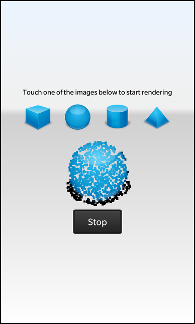

Files:
The Queued Custom Type example shows how to send custom types between threads with queued signals and slots.

In the Custom Type Sending Example, we showed how to use a custom type with signal-slot communication within the same thread.
In this example, we create a new value class, Block, and register it with the meta-object system to enable us to send instances of it between threads using queued signals and slots.
The Block class is similar to the Message class described in the Custom Type Example. It provides the default constructor, copy constructor and destructor in the public section of the class that the meta-object system requires. It describes a colored rectangle.
/** * The Block class is the custom type in this example that is used as * parameter type in a signal/slot connection. * It represents a rectangular area of a certain color. */ class Block { public: Block(); Block(const Block &other); ~Block(); Block(const QRect &rect, const bb::cascades::Color &color); bb::cascades::Color color() const; QRect rect() const; private: QRect m_rect; bb::cascades::Color m_color; }; /** * The Q_DECLARE_METATYPE macro is the important part here. * It makes our custom Block class known to the Qt meta type system. * That allows us to store a Block object inside a QVariant. */ Q_DECLARE_METATYPE (Block);
We will still need to register it with the meta-object system at run-time by calling the qRegisterMetaType() template function before we make any signal-slot connections that use this type. Even though we do not intend to use the type with QVariant in this example, it is good practice to also declare the new type with Q_DECLARE_METATYPE().
The implementation of the Block class is trivial, so we avoid quoting it here.
We define a simple Renderer class with a private slot that accepts a Block object. The rest of the class is concerned with managing the user interface and handling images.
/** * The Renderer class encapsulates business logic of this application. * It transforms an image by spawning off worker threads (RenderThread), retrieves * the result via a signal/slot connection and then 'paints' the result in * the UI by generating a couple of colored Containers inside a canvas Container. */ class Renderer : public QObject { Q_OBJECT // A property that reports whether a worker thread is currently running. Q_PROPERTY(bool active READ active NOTIFY activeChanged) public: Renderer(QObject *parent = 0); /** * This method is called to tell the Renderer on which Container the colored * blocks should be positioned. */ void setCanvas(bb::cascades::Container *container); // This method is called whenever the user selects an image in the UI. Q_INVOKABLE void loadImage(const QString &name); public Q_SLOTS: // This method is called whenever the user wants to abort the current transformation of an image void stop(); Q_SIGNALS: // The change notification signal for the active property void activeChanged(); private Q_SLOTS: // This method is called whenever the RenderThread has finished the calculation of one block. void addBlock(const Block &block); // This method is called whenever the RenderThread has finished the complete transformation of an image void threadFinished(); private: // The accessor method for the active property bool active() const; // The canvas container object bb::cascades::Container *m_container; // The render thread RenderThread *m_thread; // The active property bool m_active; };
The Renderer class also contains a worker thread, provided by a RenderThread object. This will emit signals to send Block objects to the renderer's addBlock(Block) slot.
The parts of the Renderer class that are most relevant are the constructor and the addBlock(Block) slot.
The constructor creates a thread for rendering images.
Renderer::Renderer(QObject *parent) : QObject(parent), m_active(false) { /** * We use only one RenderThread object in this example, so only one * image can be transformed at a time. */ m_thread = new RenderThread(); connect(m_thread, SIGNAL(finished()), this, SLOT(threadFinished())); connect(m_thread, SIGNAL(sendBlock(Block)), this, SLOT(addBlock(Block)));
In the last of these connections, we connect a signal in the RenderThread object to the addBlock(Block) slot in the renderer.
The addBlock(Block) slot receives blocks from the rendering thread via the signal-slot connection set up in the constructor:
void Renderer::addBlock(const Block &block) { /** * We represent each block by a 'pixel' Container object with the same * geometry and color as the block. * The pixel containers are placed on the canvas container. */ Container *pixel = new Container(m_container); pixel->setBackground(block.color()); pixel->setPreferredWidth(block.rect().width()); pixel->setPreferredHeight(block.rect().height()); AbsoluteLayoutProperties *properties = new AbsoluteLayoutProperties; properties->setPositionX(block.rect().x()); properties->setPositionY(block.rect().y()); pixel->setLayoutProperties(properties); }
We simply create the pixel Container on the canvas container as they arrive.
The RenderThread class processes an image, creating Block objects and using the sendBlock(Block) signal to send them to other components in the example.
/** * The RenderThread class takes an image as input and transforms it into a list of colored rectangles (blocks) * that depicts the image in a more abstract way. * The transformation is executed in a separated worker thread and the result (the list of blocks) is reported * back to the Renderer as parameter of a signal. */ class RenderThread : public QThread { Q_OBJECT public: RenderThread(QObject *parent = 0); ~RenderThread(); // This method is called to start the transformation on the given image void processImage(const QImage &image); public Q_SLOTS: // This method is called whenever the user wants to stop the transformation process void stopProcess(); Q_SIGNALS: // This signal is emitted whenever a new block has been calculated void sendBlock(const Block &block); protected: /** * This method is reimplemented from the QThread class. The content of this * method will be executed in the worker thread. */ void run(); private: // A flag to signal the worker thread that it should terminate itself bool m_abort; // A mutex to serialize the access to the m_abort flag QMutex mutex; // The image that should be transformed QImage m_image; };
The constructor and destructor are not quoted here. These take care of setting up the thread's internal state and cleaning up when it is destroyed.
Processing is started with the processImage() function, which calls the RenderThread class's reimplementation of the QThread::run() function:
void RenderThread::processImage(const QImage &image) { if (image.isNull()) return; // Store a copy of the image ... m_image = image; // ... reset the abort flag ... m_abort = false; // ... and start the execution of the worker thread. start(); } void RenderThread::run() { // Note: The content of this method is executed inside the worker thread! // Iterate over the image pixel-by-pixel and calculate the color of the blocks int size = qMax(m_image.width() / 20, m_image.height() / 20); for (int s = size; s > 10; --s) { for (int c = 0; c < 400; ++c) {
Ignoring the details of the way the image is processed, we see that the signal containing a block is emitted in the usual way:
...
if (qAlpha(m_image.pixel(x1, y1)) != 0) { // ignore transparent pixels
// Create a corresponding color object
const bb::cascades::Color color = bb::cascades::Color::fromRGBA(red / n / 255.0, green / n / 255.0, blue / n / 255.0, 1.0);
// Create a block of the current block size
Block block(QRect(x1, y1, x2 - x1 + 1, y2 - y1 + 1), color);
// Send the result by emitting the signal
emit sendBlock(block);
}
/**
* If the user requested the abort of the worker thread, we simply return from the run() method,
* which will cause the termination of the worker thread.
*/
if (m_abort)
return;
msleep(10);
}
}
}
Each signal that is emitted will be queued and delivered later to the renderer's addBlock(Block) slot.
In the example's main() function, we perform the registration of the Block class as a custom type with the meta-object system by calling the qRegisterMetaType() template function:
Q_DECL_EXPORT int main(int argc, char **argv) { /** * We have to call qRegisterMetaType() on our custom class if we want to use * it as parameter type for a cross-thread signal/slot connection. * Using only Q_DECLARE_METATYPE is not enough in that case. */ qRegisterMetaType<Block>(); Application app(argc, argv); // Create the renderer object Renderer renderer; // Load the UI description from main.qml QmlDocument *qml = QmlDocument::create("asset:///main.qml"); // Make the Renderer object available to the UI as context property qml->setContextProperty("_renderer", &renderer); // Create the application scene AbstractPane *appPage = qml->createRootObject<AbstractPane>(); Application::instance()->setScene(appPage); // Tell the Renderer object which control it should use for 'painting' renderer.setCanvas(appPage->findChild<Container*>("canvas")); return Application::exec(); }
This call is placed here to ensure that the type is registered before any signal-slot connections are made that use it.
This example showed how a custom type can be registered with the meta-object system so that it can be used with signal-slot connections between threads. For ordinary communication involving direct signals and slots, it is enough to simply declare the type in the way described in the Custom Type Sending Example.
In practice, both the Q_DECLARE_METATYPE() macro and the qRegisterMetaType() template function can be used to register custom types, but qRegisterMetaType() is only required if you need to perform signal-slot communication or need to create and destroy objects of the custom type at run-time.
More information on using custom types with Qt can be found in the Creating Custom Qt Types document.